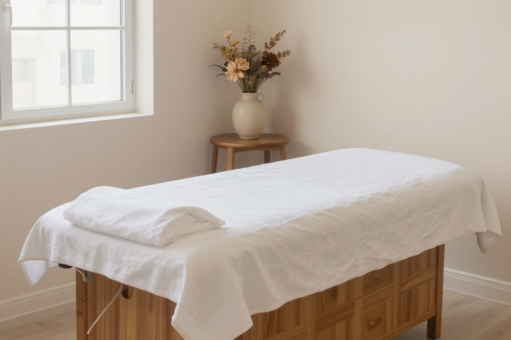
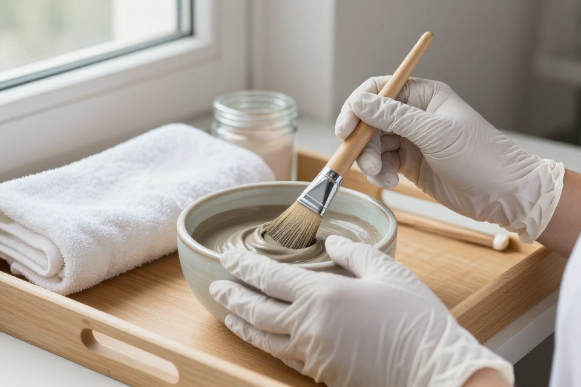

Göztepe'de cilt bakımı, kaş ve tırnak
Küçük bir atölyeyiz: her randevuda aynı uzman, aynı oda. Hizmeti, günü ve saati seçin; randevunuz WhatsApp'a hazır gelsin.
4,9 Google puanı, 160 yorum (örnek), uzmanınız Defne Aydın, 12 yıl
Randevu iste: hizmet, gün, saat seç

Tek oda, tek uzman. Randevular arka arkaya sıkıştırılmaz.
Randevunuzu ben karşılarım
On iki yıldır cilt bakımı yapıyorum. Atölyeyi küçük tuttum ki herkesin cildini ve ne sevdiğini hatırlayayım. İlk gelişinizde önce konuşuruz, sonra başlarız.
Defne Aydınkurucu, cilt bakım uzmanı
Gelenler ne diyor
4,9 Google puanı (örnek) · Haritada yorumlar (demoda kapalı)
Yorumlar örnektir; sitede sizin gerçek puanınız ve yorumlarınız yer alırÜç yıldır başka yere gitmiyorum. Cildim değişince ürünü de değiştirdi, bunu kendisi fark etti.
Kaş için geldim, ölçüp çizip gösterdi, onaylamadan almadı.
Randevu saatinde başladı, beklemedim. Oda çok sakin.
Sorular
Burada olmayanı WhatsApp'tan sorun.
İlk cilt bakımında ne oluyor?
İlk 10 dakika cildinize bakıp ne kullandığınızı konuşuruz, sonra bakım başlar. Toplam 60-75 dakika sürer.
Randevumu iptal edebilir miyim?
Randevudan 3 saat önceye kadar WhatsApp'tan yazmanız yeterli, ücret alınmaz.
Kimlere uygun değil?
Hamilelik, aktif cilt enfeksiyonu, yeni güneş yanığı ya da yakın zamanda yapılmış bir cilt işlemi varsa randevudan önce yazın. Uygun değilse işlem yapılmaz, başka zamana alınır. İlk gelişte kısa bir ön görüşme yaparız. Kirpik liftingde göz enfeksiyonu, ağdada varis ya da yeni lazer/peeling, kalıcı ojede tırnak mantarı varsa da önce yazın.
İade var mı?
Tek seanslık çalışırız, paket satmayız. Ödeme işlemden sonra alınır; işlem yapılmadıysa ücret alınmaz. Sonuçtan memnun kalmazsanız 3 gün içinde yazın, ücretsiz rötuş yaparız (örnek koşul).
Malzemeler tek kullanımlık mı?
Ağda spatulası, eldiven ve manikür törpüsü tek kullanımlıktır; metal aletler her müşteriden sonra temizlenip dezenfekte edilir.
Nasıl ödeme yapabilirim?
Nakit, kart ya da havale. Ödeme işlem bitince alınır.
Göztepe istasyonuna 4 dakika
- Adres
- Örnek Sokak No: 2, Göztepe, Kadıköy
Haritada yol tarifi al (demoda kapalı) - Saatler
- Pazartesi - Cumartesi, 10.00 - 20.00
- Telefon
- 0216 000 00 00